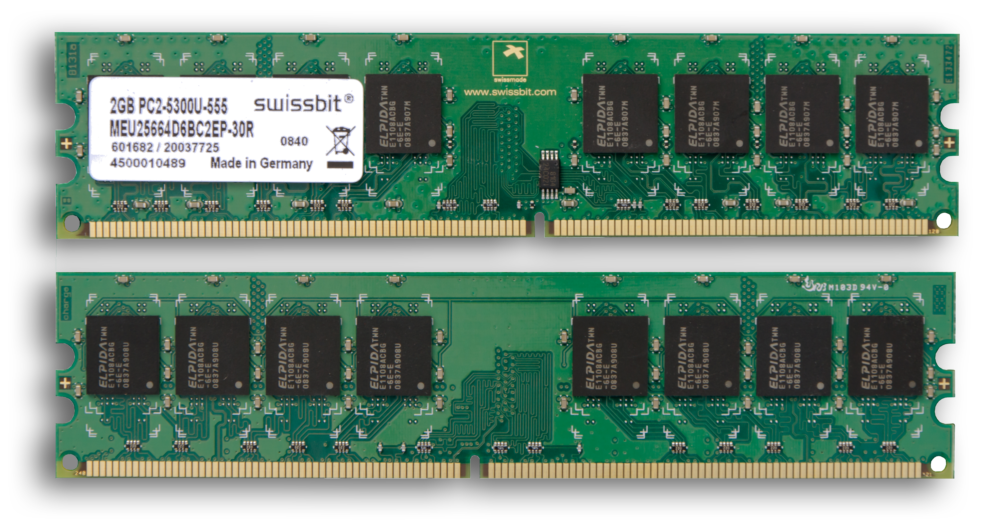
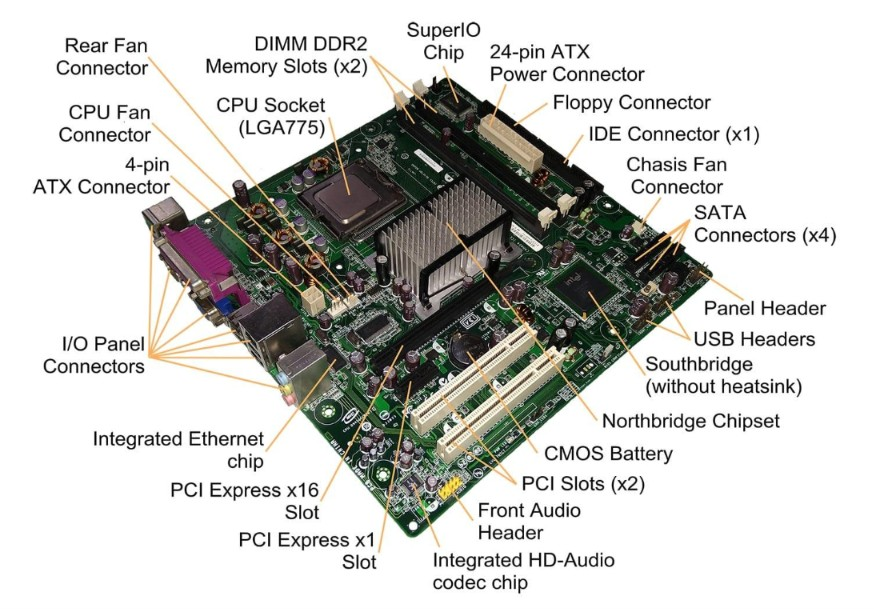
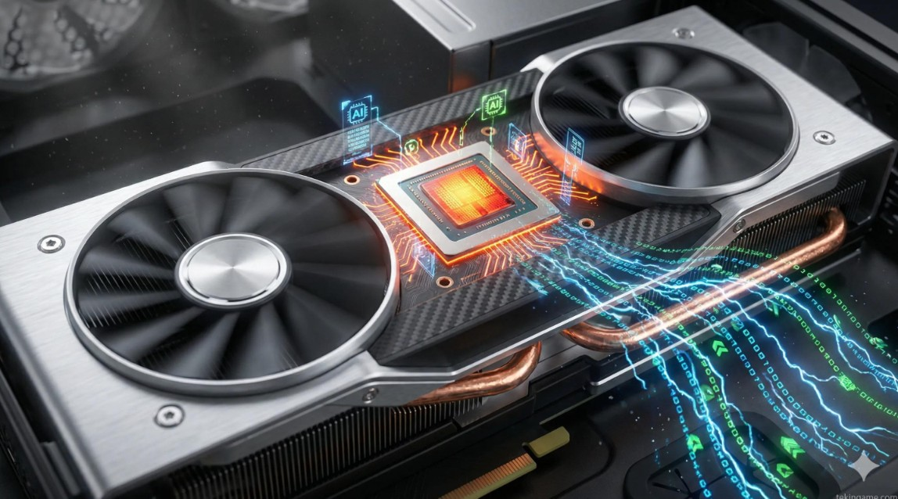
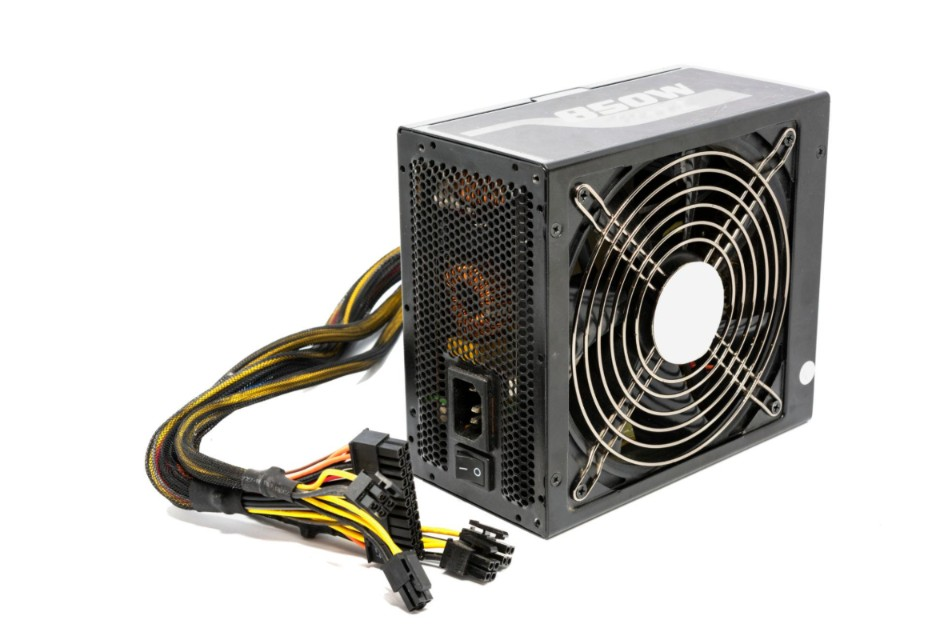
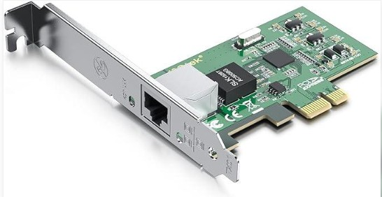

🖥️ មេរៀនគ្រឿងបន្លាស់កុំព្យូទ័រ (Hardware)
១. ការណែនាំអំពី Hardware
Hardware (ផ្នែករឹង) គឺជាផ្នែក ឬឧបករណ៍របស់កុំព្យូទ័រ ដែលយើងអាចមើលឃើញ និងប៉ះបានដោយដៃ។
Hardware (ផ្នែករឹង)
ឧទាហរណ៍៖
- Monitor (អេក្រង់)
- Keyboard (ក្ដារចុច)
- Mouse (កណ្ដុរ)
- CPU (Processor)
- RAM
- Hard Disk
- Motherboard

២. សមាសភាគសំខាន់ៗនៃ Computer
កុំព្យូទ័រដំណើរការបានអាស្រ័យលើ CPU (ខួរក្បាល), RAM (អង្គចងចាំបណ្តោះអាសន្ន), និង Storage (SSD/HDD)...
សមាសភាគសំខាន់ៗក្នុងប្រព័ន្ធកុំព្យូទ័រ
• បន្ទះមេ (Motherboard / Mainboard)
• ខួរក្បាល (CPU)
• អង្គចងចាំបណ្តោះអាសន្ន (RAM)
• អង្គចងចាំថាវនដ៍ (Storage: SSD / HDD)
• កាតបង្ហាញ (GPU / Graphics Card)
• អ្នកផ្គត់ផ្គង់ថាមពល (PSU / Power Supply Unit)
• ប្រព័ន្ធត្រជាក់ (Cooling System: Fans / Liquid Cooling)
• ឧបករណ៍បញ្ចូល និងបញ្ចេញទិន្នន័យ (Input/Output Devices)

៣. តួនាទីរបស់ CPU (Central Processing Unit)
CPU ត្រូវបានគេចាត់ទុកថាជាខួរក្បាលរបស់កុំព្យូទ័រ ដែលមានបញ្ជា និងគណនេយ្យរាល់កិច្ចការទាំងឡាយដែលបានបញ្ជូនមកពី Software និង Hardware ដទៃទៀត។
តួនាទីសំខាន់ៗរបស់ CPU
CPU មានមុខងារសំខាន់ៗដូចជា៖
1. Processing Data: ដំណើរការទិន្នន័យ។
2. Executing Instructions: អនុវត្តសេចក្ដីបញ្ជាពីកម្មវិធី។
3. Performing Calculations: គណនាលេខ និងប្រតិបត្តិការគណិតវិទ្យា។
4. Controlling Operations: គ្រប់គ្រងការងារផ្សេងៗនៅក្នុងកុំព្យូទ័រ។
ចំណាំ៖ CPU ដែលមាន GHz ខ្ពស់ជាង មិនមែនមានន័យថាលឿនជាងគ្រប់ករណីទេ។
ត្រូវមើល Core, Architecture និងជំនាន់ CPU ផងដែរ។

៤. RAM (Random Access Memory)
RAM (Random Access Memory) មានន័យថា អង្គចងចាំបណ្ដោះអាសន្ន។
RAM គឺជាផ្នែករបស់កុំព្យូទ័រ ដែលប្រើសម្រាប់រក្សាទុកទិន្នន័យ
និងកម្មវិធីដែលកំពុងដំណើរការ ដើម្បីឱ្យ CPU
អាចចូលប្រើទិន្នន័យទាំងនោះបានលឿន។
តួនាទីសំខាន់ៗរបស់ RAM
RAM មានមុខងារសំខាន់ៗដូចជា៖
1. Temporary Data Storage: រក្សាទុកទិន្នន័យបណ្ដោះអាសន្ន។
2. Running Applications: ជួយឱ្យកម្មវិធីដែលកំពុងបើកដំណើរការ។
3. Fast Data Access: អនុញ្ញាតឱ្យ CPU ចូលប្រើទិន្នន័យបានលឿន។
4. Multitasking: ជួយឱ្យកុំព្យូទ័រដំណើរការកម្មវិធីច្រើនក្នុងពេលតែមួយ។
ចំណាំ៖ RAM កាន់តែច្រើន
អាចជួយឱ្យអ្នកបើកកម្មវិធីច្រើនក្នុងពេលតែមួយបានកាន់តែប្រសើរ
ប៉ុន្តែវាក៏អាស្រ័យលើ CPU និងកម្មវិធីដែលប្រើផងដែរ។

៥. Motherboard (បន្ទះមេ)
Motherboard (បន្ទះមេ) គឺជាផ្នែករបស់កុំព្យូទ័រ
ដែលជាកន្លែងដែលផ្សព្វផ្សាយទាំងអស់នៃផ្នែកខុសគ្នារបស់កុំព្យូទ័រ
ភ្ជាប់គ្នាជាមួយគ្នា។
Motherboard មានមុខងារសំខាន់ៗដូចជា ផ្តល់ថវិកា និងភាពត្រងតា សម្រាប់ CPU,
RAM, និងផ្នែកខុសគ្នាផ្សព្វផ្សាយ។
តួនាទីសំខាន់ៗរបស់ Motherboard
មុខងារសំខាន់ៗមាន៖
1. ភ្ជាប់ CPU, RAM និង Storage។
2. ជួយឱ្យ Hardware ទាក់ទងគ្នា។
3. បញ្ជូនទិន្នន័យរវាងគ្រឿងបន្លាស់។
4. ចែកចាយថាមពលទៅផ្នែកផ្សេងៗ។
5. ផ្ដល់រន្ធសម្រាប់បន្ថែម Hardware។

៦. GPU (Graphics Processing Unit)
GPU (Graphics Processing Unit) គឺជាផ្នែករបស់កុំព្យូទ័រ
ដែលមានមុខងារសំខាន់ៗដូចជា ការបង្ហាញរូបភាព និងវីដេអូ។
GPU មានមុខងារសំខាន់ៗដូចជា ផ្តល់ថវិកា និងភាពត្រងតា សម្រាប់ CPU, RAM,
និងផ្នែកខុសគ្នាផ្សព្វផ្សាយ។
និយាយឱ្យងាយយល់៖
- CPU = ខួរក្បាលដែលដំណើរការការងារទូទៅរបស់កុំព្យូទ័រ។
- GPU = ជំនួយដ៏សំខាន់ក្នុងការដំណើរការក្រាហ្វិក និងការគណនាប៉ារ៉ាឡែល
(Parallel Processing)។
តួនាទីសំខាន់ៗរបស់ GPU
GPU មានមុខងារសំខាន់ៗដូចជា៖
1. Graphics Rendering: ដំណើរការបង្កើតរូបភាពលើអេក្រង់។
2. Video Processing: ជួយដំណើរការវីដេអូ។
3. Gaming: ជួយដំណើរការក្រាហ្វិកក្នុងហ្គេម។
4. 3D Rendering: បង្កើតរូបភាព និងវត្ថុ 3D។
5. AI Computing: ជួយដំណើរការការគណនា AI និង Machine Learning
មួយចំនួន។

៧. PSU (Power Supply Unit)
PSU (Power Supply Unit)
គឺជាឧបករណ៍ដែលមានតួនាទីផ្គត់ផ្គង់ថាមពលអគ្គិសនីទៅកាន់ផ្នែកផ្សេងៗរបស់កុំព្យូទ័រ។
និយាយឱ្យងាយយល់៖
. កុំទ័រត្រូវការថាមពលអគ្គិសនីដើម្បីដំណើរការ។
. PSU ទទួលចរន្តអគ្គិសនីពីព្រីភ្លើង។
. PSU បម្លែងចរន្តអគ្គិសនី AC ទៅជា DC។
. បន្ទាប់មកបញ្ជូនថាមពលទៅ Motherboard, CPU, GPU និង Storage។
តួនាទីសំខាន់ៗរបស់ PSU
ដំណើរការជាទូទៅ៖
1. AC Input: ទទួលថាមពលពីព្រីភ្លើង។
2. Conversion: បម្លែង AC ទៅជា DC។
3. DC Output: បញ្ជូនថាមពលទៅកាន់ផ្នែកនានារបស់កុំព្យូទ័រ។
ឧទាហរណ៍៖ នៅពេលអ្នកចុចប៊ូតុង Power លើ PC នោះ PSU
នឹងផ្គត់ផ្គង់ថាមពលទៅកាន់ផ្នែក Hardware ដើម្បីឱ្យវាចាប់ផ្ដើមដំណើរការ។
ចំណាំ៖ ការជ្រើសរើស PSU ត្រូវពិនិត្យតាមតម្រូវការថាមពលរបស់ CPU និង GPU
ព្រមទាំងគុណភាព និងការការពារសុវត្ថិភាពរបស់ PSU។

៨. NIC (Network Interface Card)
NIC (Network Interface Card) គឺជាឧបករណ៍ Hardware
ដែលអនុញ្ញាតឱ្យកុំព្យូទ័រភ្ជាប់ទៅកាន់ Network ដូចជា LAN ឬ Internet។
និយាយឱ្យងាយយល់៖ NIC ដូចជាច្រកទ្វារដែលអនុញ្ញាតឱ្យកុំព្យូទ័រផ្ញើ
និងទទួលទិន្នន័យតាម Network។
មុខងារសំខាន់ៗរបស់ NIC
NIC មានមុខងារដូចជា៖
1. Connect to Network: ភ្ជាប់កុំព្យូទ័រទៅ Network។
2. Send Data: ផ្ញើទិន្នន័យទៅកាន់ឧបករណ៍ផ្សេង។
3. Receive Data: ទទួលទិន្នន័យពីឧបករណ៍ផ្សេង។
4. MAC Address: មានអាសយដ្ឋាន Hardware សម្រាប់កំណត់អត្តសញ្ញាណ Network
Interface។

សមាសភាគសំខាន់ៗក្នុងប្រព័ន្ធកុំព្យូទ័រ
- ម៉ូដូអប (Motherboard / Mainboard)
- ខួរក្បាល (CPU)
- អង្គចងចាំបណ្ដោះអាសន្ន (RAM)
- អង្គចងចាំថេរ (Storage: SSD / HDD)